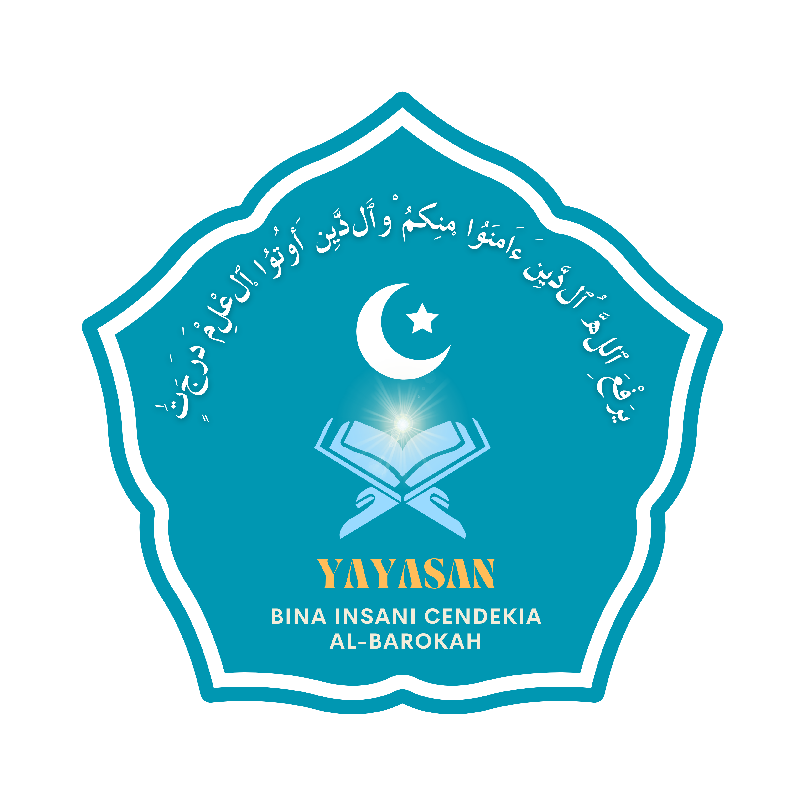

MDTU Al-Barokah hadir mendampingi putra-putri Anda dalam belajar Al-Qur'an, memahami ilmu agama, serta membiasakan diri memiliki akhlak mulia dalam kehidupan sehari-hari.


Dibawah naungan Yayasan Bina Insani Cendekia Al-Barokah
Hadir sebagai pelengkap pendidikan formal, menjawab keterbatasan akses masyarakat Kampung Cigadog terhadap pendidikan agama yang layak.
Berlokasi langsung di Kampung Cigadog sehingga mudah dijangkau anak-anak usia sekolah dasar setempat.
Tujuh mata pelajaran diniyah inti dibina bertahap sesuai usia dan kemampuan santri selama empat tingkatan kelas.
Dikelola di bawah Yayasan Bina Insani Cendekia Al-Barokah, tertib administrasi dan bersinergi dengan Kementerian Agama.
Al-Qur'an (Tahsin), Hadits, Aqidah, Akhlak, Fiqih, Bahasa Arab, dan Tarikh Islam — dibina langsung oleh dewan guru madrasah.
Pendaftaran dilakukan langsung di kantor madrasah pada jam belajar. Lihat alur lengkapnya di halaman Cara Daftar.
Lihat Cara Daftar